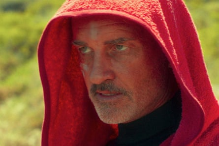

T he Australian-American actor Julian McMahon, who has died from cancer aged 56 , had a long and accomplished career. Like many Australian actors, it began with a soap opera – McMahon played Ben Lucini in 150 episodes of Home and Away – but he soon broke free to pursue a more ambitious and challenging oeuvre.
McMahon, the son of former prime minister Sir William “Billy” McMahon, made a name for himself overseas through US television in his 30s. On supernatural drama Charmed he played Cole Turner, a half-human, half-demon assassin turned love interest for one of the witches he was hired to kill. McMahon took to the show’s campy tone with aplomb, delivering lines like “I’m going straight to hell, cause it’s got to be a sin to look this good” with a twinkle in his eye.
His next big role was in Ryan Murphy’s drama Nip/Tuck , as the arrogant plastic surgeon Dr Christian Troy. In the early 2000s the show made headlines for its frank depiction of nudity and sex – the Guardian described McMahon’s character as “a vagina-seeking missile” – but it also showed his talent for bringing vulnerability to suave but damaged men. It was around this time McMahon became a favourite to succeed Pierce Brosnan as James Bond , but missed out to Daniel Craig – instead he landed the role of Victor Von Doom, AKA Doctor Doom, the supervillain of two Fantastic Four movies.
Over the years McMahon left Hollywood for home to appear in various Australian features – among them Stephan Elliott’s raucous 2018 comedy Swinging Safari , in which he played an attender of a 1970s key party, alongside Guy Pearce and his former sister-in-law Kylie Minogue, and the 2012 horror movie Bait, in which he played a robber in a supermarket that’s been flooded by a tsunami and monstered by sharks. That film was a big hit overseas, where it became, in less than two weeks, the most successful Australian movie ever released in China . In a full circle move, he recently played the Australian prime minister in Netflix’s comedy-mystery The Residence (again opposite Minogue).
Despite his career being well into its third decade, there’s a very sad feeling surrounding McMahon’s death that his talent has been dramatically cut short; that his star was very much on the rise again. One of his last roles was opposite Nicolas Cage as the villain in Lorcan Finnegan’s intensely trippy, sun-scorched thriller The Surfer , which premiered out of competition at last year’s Cannes film festival. McMahon played Scally, the leader of a gang of violent hoodlums from a small coastal town who patrol the local beach and harass visitors.
And what a performance it was. Not everybody can hold their own against an actor like Cage, but McMahon pulled it off perfectly, countering the star’s off-the-wall style with a seething, magnetic portrait of toxic masculinity – darkly charismatic and creepy as all get-out. In one memorable scene, which you can watch on YouTube , McMahon slurps down a beer and implores Cage to “drink deep, eat your fill, turn around from this town and never come back”. Throughout the film he projects a layered, paradoxically chummy kind of menace: calm and imperturbable, then, suddenly, explosively violent and unsettling.
Julian McMahon in a scene from The Surfer.Photograph: AP
McMahon had amazingly bright and burning blue eyes, the colour of the sea. They were even more striking in person – I know because I was lucky enough to meet him on the set of The Surfer in Western Australia, where we chatted about this role and work ethic. On that day, McMahon was philosophical. “You want to be open to new suggestions, new thoughts, new ideas, and new creativity, wherever that’s coming from,” he told me. And he was funny, riffing on the something he may not have missed about his home country – the insects: “Australian flies just come and sit on your face, and they’ll stay there for an hour or two.”
He is survived by his wife, Kelly Paniagua, and his daughter, Madison, from a previous marriage.